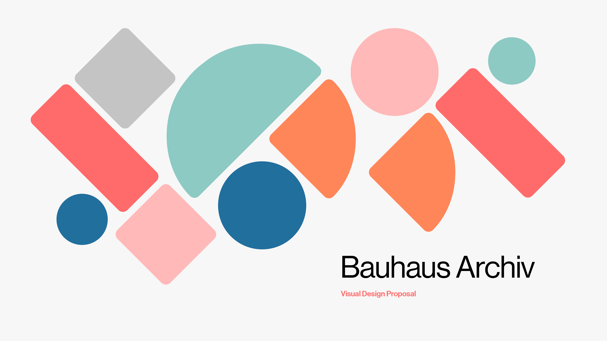

Bauhaus Archiv
Visual design proposal and microsite for the Bauhaus state archive and museum.
Role
Visual Design, Interaction Design, UX Design
Team
Virginia Chu, Nicole Tam, Xiandong Lyu
Duration
Spring 2021, 5 Weeks
Final Deliverables
Microsite walkthrough, previewing archive artefacts

Graphic Assets
Modernist Influence
The visual identity drew inspiration from the grid-based design approach utilized by Wim Crouwel, resulting in the creation of abstract typography and 2D geometric art.
Modular Grid
A modular grid was devised for the microsite, incorporating shapes reminiscent of early Bauhaus forms. The micro interaction design was crafted to emulate the form of the Bauhaus Archiv building; establishing a connection between the past and present.
Interacting with microsite elements
Browsing the Artefacts
The microsite showcases the Bauhaus collection of artifacts, offering visitors the convenience of previewing the collection in advance of their visit.
Navigating to artefact pages
Reflection
Creating this visual identity was an enlightening experience for me. It not only helped me to refine my skills in visual design and digital design but also broadened my perspective towards design. I realized that design is not just limited to the present but is influenced by the past and has an impact on the future as well. It emphasized the importance of integrating historical elements in design and providing that message to future generations.